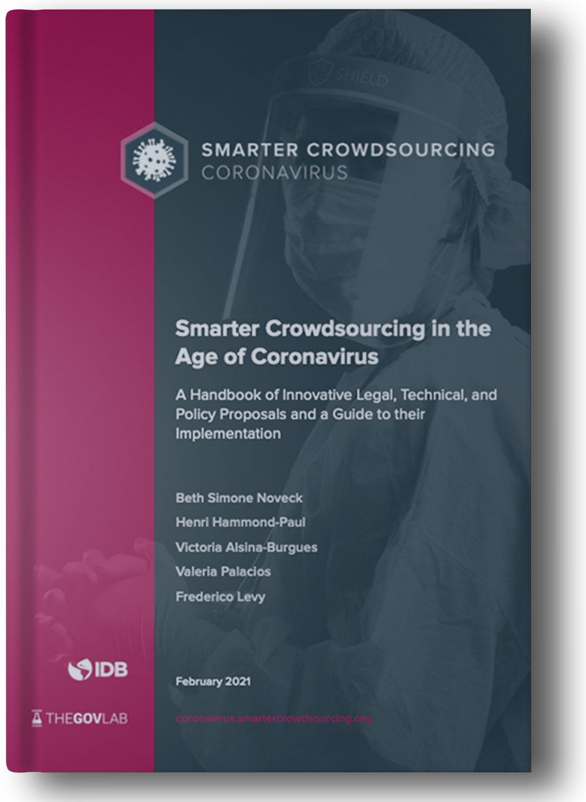
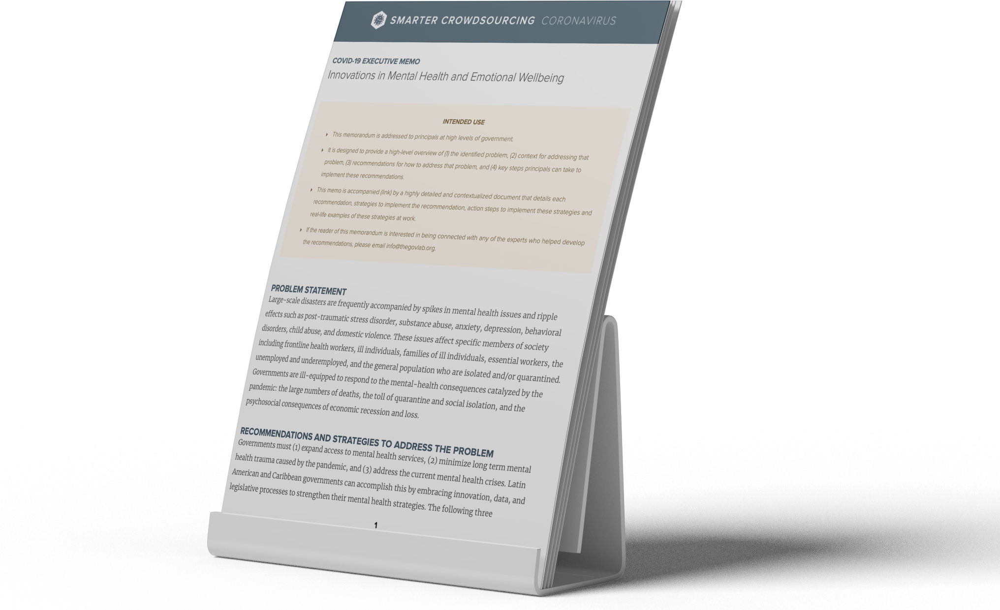

Imagine if epidemiologists, computer scientists, urban planners, policymakers and those with diverse know-how could talk to one another to design actionable solutions to fight Coronavirus
Imagine if the smartest and most innovative people could come together to build the Coronavirus strategic preparedness and response quickly and easily
Imagine if epidemiologists, computer scientists, urban planners, policymakers and those with diverse know-how could talk to one another to design actionable solutions to fight Coronavirus
Complex and interdependent problems, like coronavirus, demand access to expertise that is widely dispersed. Global and complex public health emergencies threaten public health and well-being, risk disruption to global and regional trade and economic stability, and cause widespread uncertainty and concern. This project will focus on devising innovative solutions to public health challenges across all four stages of crisis response, including mitigation, preparedness, response and recovery.




Testing Strategy
How do we design and source tests? How do we determine whom to test? What is the best strategy to administer tests and collect data?
CONFERENCE ON
July 8, 2020
Contact Tracing
What are the challenges associated with locating people with whom an infected person has come into contact?
CONFERENCE ON
July 17, 2020
Behavioral Science and COVID
How can governments use behavioral science to support the fight against COVID-19?
CONFERENCE ON
September 17, 2020
Supporting Marginalized and Vulnerable Populations
What are the best strategies to address disparities caused or exacerbated by the pandemic?
CONFERENCE ON
September 24, 2020
Epidemiological monitoring and surveillance
How can governments support a sustained recovery by developing and improving epidemiological monitoring and surveillance strategies for the “new normal?
CONFERENCE ON
November 4, 2020
Mental health and emotional wellbeing
What innovative and cost effective solutions can governments and communities implement to support the mental health needs of specific and general populations caused or exacerbated by the pandemic?
CONFERENCE ON
November 18, 2020
ABOUT THE PROJECT
For more background about Smarter Crowdsourcing in the Age of Coronavirus read our Playbook, a step-by-step guide for the development of the project. It provides answers to frequently asked questions about how to participate in this initiative.